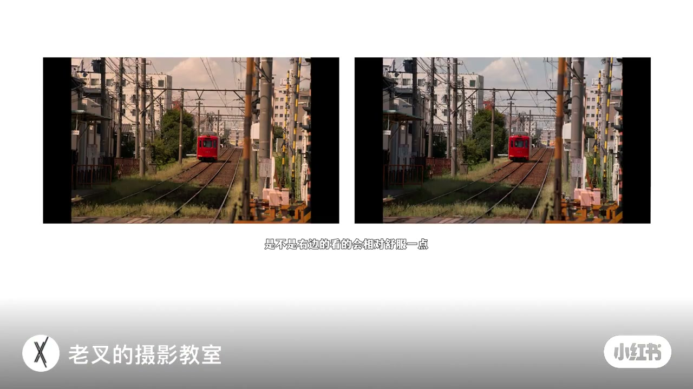
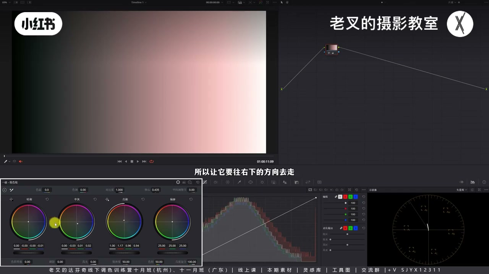
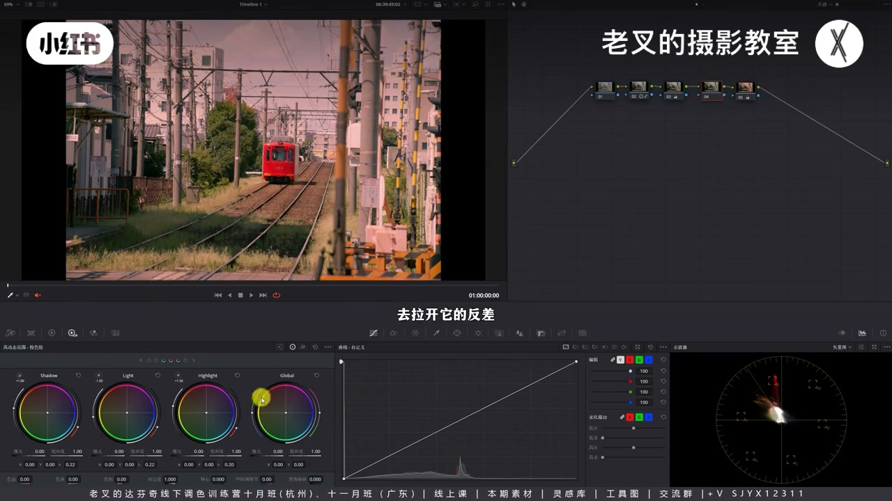
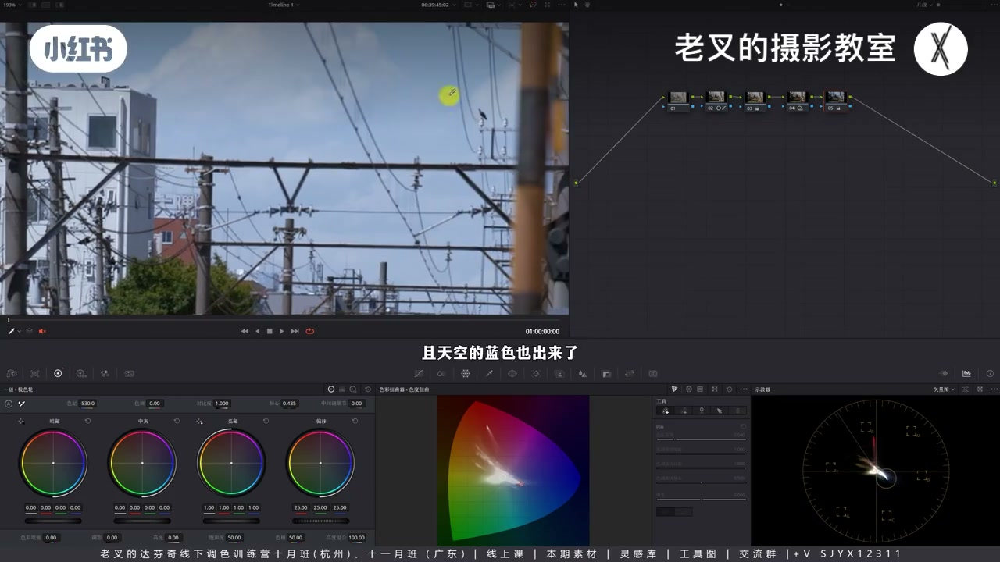
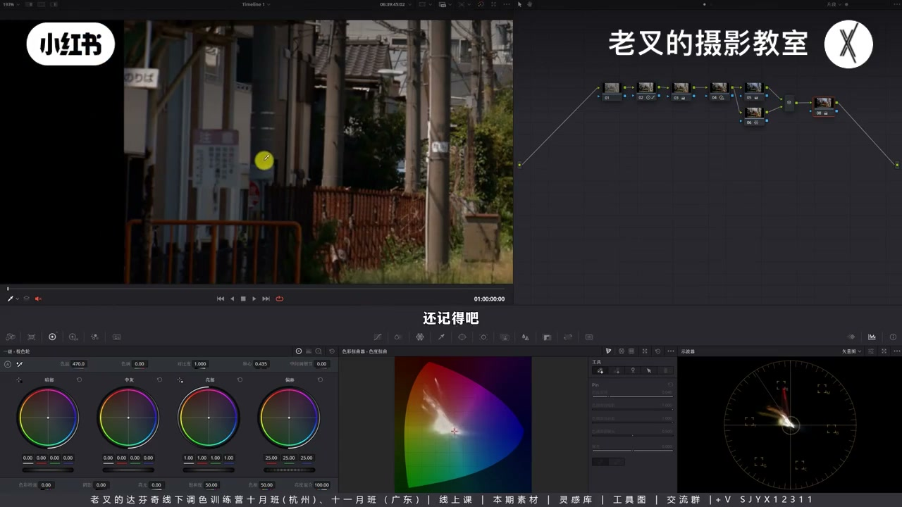

内容要点
新手想「亮暖暗冷」直接拧一级轮往往像错白平衡滤镜：染色力度应符合曝光变化，两端弱于中灰。色轮可用但要回调；更稳的是先做好影调，再色温加不够的冷、并行蜘蛛网找回暖色饱和，最后用色温微调整体冷暖——比盯每个轮子力度省事。
知识结构
染色两端应弱于中灰；硬拧亮暖暗冷易脏。
亮部加暖用中灰/暗部回调；相对冷即可。
明暗不明则染色难看；HDR 拉开后再细调天空。
缺冷就降色温；并行找回暖饱和；再色温微调。
怎么方便怎么来；染色到位以明暗准确为前提。
一级轮能做亮暖暗冷，但新手难控力度；回调与相对冷是关键。更省事：影调先准，色温补缺色、并行保暖色，再整体微调——工具择易，勿为难自己。
00:00-01:45问题：亮暖暗冷一拧就怪
左右对比：右边暗部相对冷、天空保蓝更舒服。新手常直接亮部轮左上暖、暗部轮右下冷——有效但不好看。黑白渐变上全局偏移染色时，中灰最明显、两端减淡：染色力度要符合曝光变化，两端弱于中间，否则像错白平衡加滤镜。

01:45-03:33回调与相对冷
每个一级轮都会影响全局，只是对应区更敏感。要可控必须「颜色回调」：亮部加暖时中灰、暗部反方向回调，让高光局部有色、暗部示波器近中心。暗部画面仍可显「相对冷」——不必真出蓝。粘到实拍节点：受光暖、背光相对冷。

03:33-05:17先拉开影调，再弱化高光染色
若仍不好看，多半明暗反差不够。Shift+S 前插节点：降中灰曝光、抬 Highlight，明暗更明确。一级轮仍粗暴时，后节点用 HDR 的 Highlight 略冷天空；等于对高光再回调，两端力度继续减弱。真正变暖的应是本带暖的受光元素。

05:17-07:27新手捷径：色温加冷 + 并行找回暖
删掉难控的染色节点：蜘蛛网可见受光在暖区、暗部冷不够。新节点降色温把冷与天空蓝提出来，Option+P 并行找回暖色饱和与色相——暗部/天空冷、受光仍暖。再一节点用色温整体偏冷或偏暖，相对冷暖仍在。比盯色轮力度简单得多；Final Cut / Premiere 同理。染色到位以明暗准确为大前提。


完整转录（336段）
以下文本由 Whisper medium 模型自动转录，可能存在少量识别误差，已尽可能修正。
这两个画面大家觉得哪个看的会更舒服
是不是右边的看的会相对舒服一点
为什么
其实我们放大看画面
左侧画面的暗面整体其实是偏暖的
而右侧画面中整体画面虽然也是走暖调
但是暗部它是相对冷的结果
并且它的天空也能够保持一定的蓝色
这就是新手朋友在染色的时候
最容易遇到的第一个问题
颜色的动态平衡
也就是大家常说的
我想要让高光偏暖暗部偏冷的颜色结果
这个时候你看到了一级校色轮
在一级校色轮中
它正好就有亮部色轮和暗部色轮
按照曝光去做分布的
那我是不是就可以让亮部色轮往暖的方向
也就是往左上角去走
让它变暖
然后让暗部色轮往冷
也就是往右下角去走
让它变冷
哎 效果是有的
但是这不是好的效果
你的画面就会变得非常非常怪
如果在色轮使用的时候有遇到类似的问题
大家也可以扣个1啊
要用好色轮
就必须要先明确每个色轮
对一个画面染色的比重情况
看到这张黑白界面图
对于这张图
当我们给它用全局改变颜色的偏移色轮
给它上一个颜色了之后
我们能够看到
颜色改变最明显的是这个区域
对吧
也就是中灰区域
它往左右两侧
它会逐渐减淡
这就代表着染色的力度
是要符合曝光变化的
当我们给一个有颜色的画面增加曝光
时我们看到画面的颜色
会逐渐减淡直到最亮
也就是变成了白色
那往暗也是一样的
它的饱和度会逐渐降低
直至变成最暗的黑色
也就是没有颜色
我们看深亮图也看得出来
那也就是说
当我们给一个画面染色的时候
假设有一个坐标系
从左往右是从明到暗
外轴代表着染色的力度
我们应该要让这个坐标系
大致呈现出这样的一个效果
所有两个极端的染色
一定要弱于中间部分
否则你的画面就会呈现出
像开头这样的一个结果
它就像是一个白平衡
不正确的给画面
加了一层滤镜一样的感觉
不好看
那照你这样说
色轮就没法用了吗
其实不是
一级轿色轮之所以不好控
是因为每个色轮
其他区域产生影响
那比如说我们用亮部色轮
我给亮部色轮染色
其实全局都会受到影响
中灰也是一样
暗部呢也是一样
全局都会受到影响
只不过它对对应的区域
会调整得更加敏感而已
那这个时候呢
我们就要注意一个概念
当我们想要让一级轿色轮染色
更加可控
就必须要注意
叫做颜色回调
也就是颜色的区域把控
先叠个假
接下来的所有内容
均为我从项目之心中
总结出来的个人想法
如果和你之前学习到的思路
有比较大的出入
则优即可
不要去做对立
那比如说
我想让这个黑白界面图
让它呈现出高光偏暖的结果
那么我们就要让亮部色轮
往左上角去移动
这样的高光部分是变暖了
但其余部分
我不想让它受到太多的影响
所以呢
我就必须要用中灰
和暗部色轮来回调
好
我们看目前
我们三个色轮的调整方式
亮部色轮往左上
也就是往暖的方向走
中灰色轮它是在做回调
所以让它要往右下的方向去走
暗部色轮也是一样
要让它往下走
那此时呢
从适量图上也看得出来
我们在暗部这个区域
它基本上是靠近
整个适量图的中心点
也就是没有颜色
那么此时
我们就能够实现让高光
也就是局部区域
染上颜色的一个结果
不知道这个时候
大家有没有注意到
我们在用暗部色轮
做回调的时候
虽然我们从适量图上看得出来
暗部的颜色
其实是不明显的
刚刚说过它的中心点
但是从画面的结果来看
左侧好像就是变冷了一点点
对吧
那这就是第二个概念
相对颜色
只要我比你稍微冷一点
就算我没有出现蓝色
那我也比你冷
这个虽然听着像是个废话
可是它非常关键
我们现在就是在利用回调的思路
来让画面颜色
出现冷暖对比的一个效果
那此时
如果我们把这个节点
它的效果
C 复制一下
回到刚刚这个画面
在这个4号节点空节点上
粘贴出来这个结果
我们看
此时是不是受光面变暖了
暗面这一部分背光面
原本是这样的
它能够保持一个相对冷的结果
那么对于这个画面来讲
冷暖的对比就有了
好
那这个时候你们感觉
这不好看
为什么不好看
因为原本的画面
它的明暗反差就是不明确的
亮的不够亮
暗的不够暗
所以呢
这也是我们一直在说的
一定要先把影调关系做好
再去考虑染色的事情
所以呢
我们把4号节点往右边拉一点
按住Shift加S
往前建立一个节点
然后在4号节点中
依照下午傍晚十分的
影调关系去拉开它的反差
也是稍微降低一点
中间掉部分的曝光
然后提高一点
Highlight色轮的曝光
让它明与暗更加明确
那此时我们看到
这样调完了之后
是不是看得会更加舒服
稍微舒服了一点
但是还没完
一级较色轮的染色
还是过于粗暴了
我们需要对颜色
进一步的优化
至少我觉得
你这个天空得蓝一点
对吧
所以我们可以在5号节点
后面再来一个节点
用HDR色轮找到
天空对应的色轮
应该就是这个Highlight色轮
然后呢
把它往冷的方向走一点点
变冷了
这样是不是就舒服多了
对吧
这个时候呢
不知道大家有没有发现
我们给高光部分
又再做回调
原本高光偏暖
甚至有点发红
但是呢
我们用Highlight色轮
让它往右下角
也就是反方向去调整
那这样呢
就能让画面变得更舒服
是不是始终都是
围绕着刚刚的
拖标系的行为来做的
靠近两端
它的力度变弱
我们再回调
也就是减弱
高光部分的染色情况
那此时我们再看画面
我们真正让画面变暖的
是不是本身就带有暖色的元素
比如说
被阳光照到的物体
那这个时候呢
我就必须要强调一点
色轮染色对于新手来讲
非常麻烦
因为你的每个色轮
调整的力度
你是不知道的
你每次都要靠视的话
那么你一个画面调色
不就变得过于浪费时间了吗
而且你不一定调的到位
那既然我们是要让暖的
来强化它的暖
从而显得更暖的话
那么我们就可以
考虑另外一个思路
我们先把这两个染色的节点
给删了
观察画面中要变暖的物体
它此时是不是暖色
比如说轨道
或者这些受光面
我们其实可以
用蜘蛛网的暖色去来试看
能不能选择得到
其实都选得到
这些部分受光面
都在暖色的部分
那暗部的冷色够不够
其实是不太够的
虽然有一点
但还是有点弱
对吧
那对于这个画面来讲
暖色是有的
但冷色不够
那既然不够
我们就来个节点
把不够的颜色给它加上
怎么加
就是用色温往左边一偏
降一点色温了之后
我们看到
这边冷色
是不是就出来更明显了
而且天空的蓝色也出来了
然后我们按住 Alt 加 P
或者是 Option 加 P
来个并行节点
把暖色部分的饱度
和色相给它找回来
哎 此时你看
是不是画面中
冷暖对比又有了
既能够保证
暗部和天空是冷的
还能够让这些被光照到的部分
保持是暖的
那在这个基础上
你说我想让画面冷一点
或者暖一点
这个时候
你就只需要再来一个节点
用色温
暖一点可不可以
当然可以
我调暖了之后
暗部还是保持相对冷
还记得吧
我们刚刚说的这个观念
相对冷
天空也是蓝的
你如果想让它变得冷一点
色温往左边一降
哎 降完了之后呢
这些受光面能保持相对暖
这样的一个操作
是不是比色轮要简单得多得多
好多新手朋友
一直想要去掌握用色轮染色
其实我的建议是
不要急
因为它确实有一点点难
但是你想要用打分级染色
它不只有色轮一个工具
你有非常多的思路可以去实现
所以呢
我觉得工具的选择一定是
怎么方便怎么来
千万不要为难自己
并且大家一定要记住的一个点
就是染色的到位
是一定需要明暗反差的准确
作为大前提的
那今天讲的色轮的理论
在Final和PR中都是试用的
素材大家可以临续过去之后
感受一下
讲到这里
如果你觉得对你有帮助的话
还希望多多三连
好了
这期就到这里
886